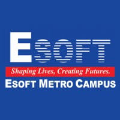

ESOFT METRO CAMPUS
(SRI LANKA'S PREMIER PRIVATE HIGHER EDUCATION INSTITUTE FOR IT & BUSINESS)

HISTORY OF ESOFT (PRIVATE INSTITUTE)
- 2000: Established as a specialized private computer training center in Sri Lanka.
- 2008: Partnered with Kingston University London to offer internal private British degrees locally.
- 2010s: Expanded nationwide to become Sri Lanka's largest private higher education network with over 40 branches.
- Present: Recognized as a non-state university college delivering diploma, undergraduate, and postgraduate programs.
AVAILABLE FACULTIES (PRIVATE DEGREE PROGRAMS)
- School of Computing – පරිගණක විද්යා අධ්යයනාංශය
- School of Business – ව්යාපාර අධ්යයනාංශය
- School of Engineering – ඉංජිනේරු අධ්යyනාංශය
- School of Languages – භාෂා අධ්යයනාංශය
GO TO OFFICIAL WEBSITE OF ESOFT (PRIVATE)
GO TO HOME PAGE